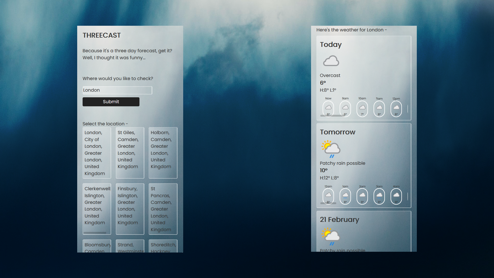

Threecast
The goal
After learning front-end web development for almost a year I was eager to start learning about the back-end and finally getting into full-stack development. The goal was to learn about Node.js and Express.js and to create my first project with a back-end pulling data from an external API. Why a weather app? Well, there just aren’t enough weather apps out in the wild is there? How else am I going to know what the weather's like, look out of a window? Honestly...
The stack and why
The front-end is written with HTML, CSS, and JavaScript, and the back-end was written with Node.js and Express.js. It made sense to use a technology for the back-end that is written in JavaScript rather than learning another language.
Local storage is also implemented so when a user revisits the site they’re given the weather for the last place they checked. Most of my front-end development up until this point had been written on CodePen so I wrote this on Glitch.com, that meant that I could write a full-stack project in an online IDE which seemed familiar.
Problems and solutions
The main issue was that this was my first back-end project so I had to learn about passing information from the back-end to the front-end, routing, and pretty much everything else. There was a lot of referring to the docs, trial and error, then some tears, but we don’t talk about that.
The first API I found also only allowed 50 requests a day, which caused problems just during testing. I persevered for the sake of getting the project working but once everything was in place I changed to another API, this meant making some small code amendments on account of the differences in data format, but also provided some additional features (like hourly forecast) and led to the name of the app.
I was pretty excited to get started on this so just dove into coding and learning about Node and Express, that meant that I completely skipped designing anything and ended up picking colours and making other decisions about the design on the fly. It wasn’t the worst website I had seen but I ended up re-designing all of the front-end.
Lessons
I learned a great amount on this project but my biggest takeaways would be about planning the design and infrastructure beforehand. This also cemented the importance of notes in my code as I could easily see what was supposed to happen without reading through the documentation every time.